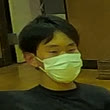
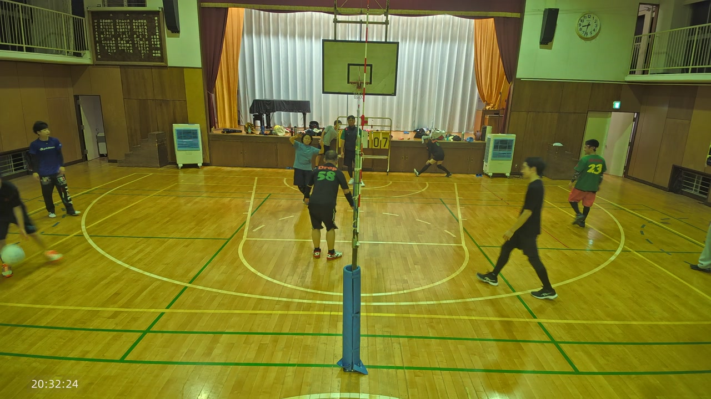
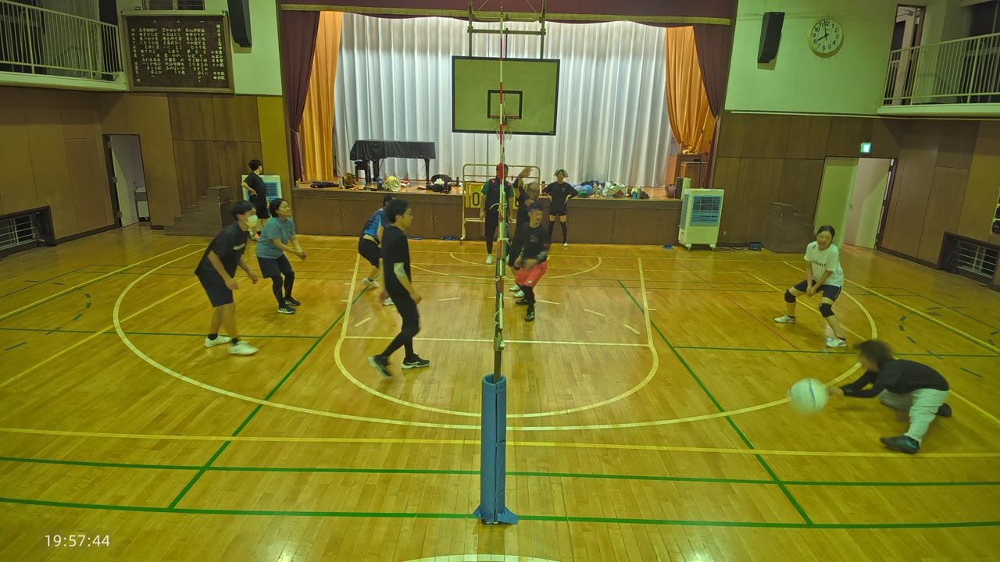
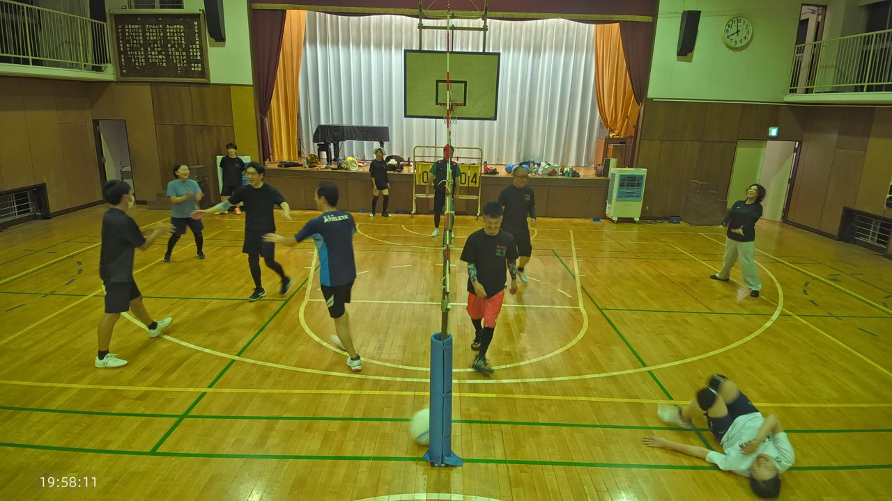
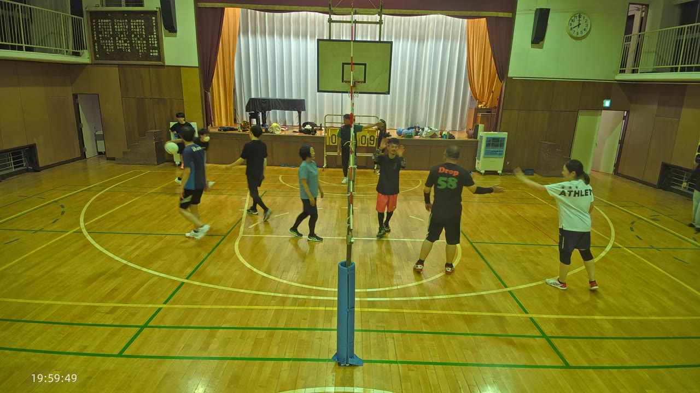
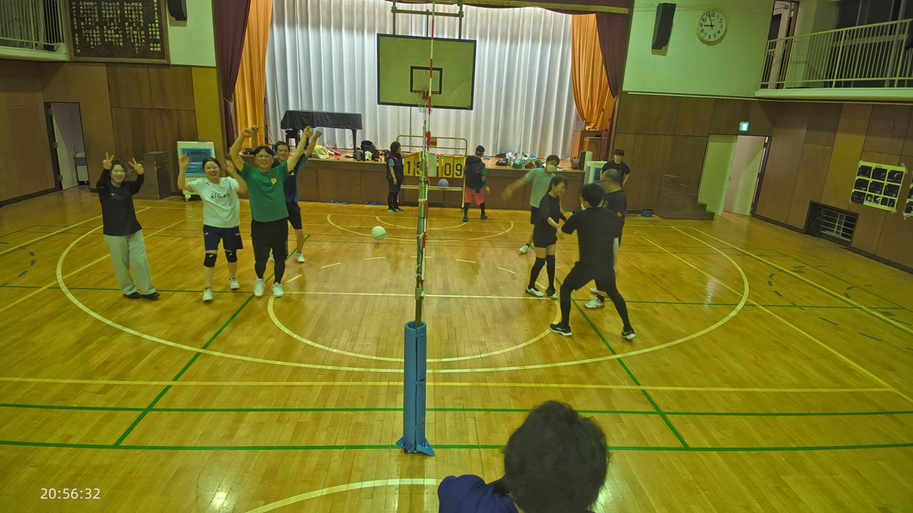

18:19ごろから60:23ごろまでの長い時間帯、ネット際でのアタックの中心にいました。

50:00ごろ前半・後半のどちらでも、バスケットゴールの高さ近くまで跳び上がっての強い打ち込みを繰り返し見せました。相手コートに攻め込まれる時間が長かった区間でも、レシーブからつなぐ役割にも顔を出しており、休みなく動き続けた一日でした。
15:20ごろ、コート前方に低く落ちるボールへ、体を投げ出すように片手を伸ばしました。

15:20ごろこの一本はとくに守備範囲の広さが光る場面でした。直後には拍手が起こり、チームメイトが駆け寄って声をかけ合う様子も見られました。
15:47ごろ、コートのサイドライン付近でボールを追いかけ、そのまま大きく一回転するように倒れ込みました。

15:47ごろ豪快な転び方でしたが、周りからは拍手が起こり、すぐに自力で起き上がって、いちばんに駆け寄ったやっさんと笑い合っていました。ボールへ最後まで食らいついた姿勢そのものは、褒められる一本です。
17:25ごろ、得点の直後にチームメイトへ駆け寄り、腕を伸ばしてハイタッチする姿がありました。

17:25ごろ試合を通じて何度もチームメイトと声をかけ合い、盛り上げ役になっていました。
74:08ごろ、かずおが助走からジャンプして鋭く打ち込むと、コートの片側で選手たちが一斉に両手を挙げて喜びました。

74:08ごろコートには「やった!やった!」という声が響き、勝利のポーズをとる選手も。この日の中でもいちばん大きな喜び方で、拍手と歓声がひとしきり続きました。練習の終盤、集中力が切れてもおかしくない時間帯にこれだけ盛り上がれるのは、この日の雰囲気の良さを表しています。
得点板は、この日確認できただけで少なくとも6回「0-0」にリセットされていました。チームを組み替えながら、複数セットを重ねる一日だったことがうかがえます。
また、68:43ごろには、けん・かずおの二人が同時にネット際へ跳び、ブロックの形を作る場面もありました。奥から寄る二枚目の動きがそろってきています。
次回を楽しみにしています。
けんぴー(AI)